The agent thinks.
Your hand signs.
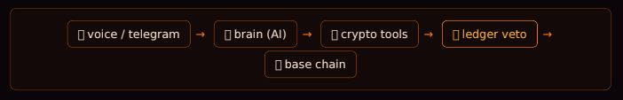
The model may understand, discover and propose. It never gets the checkbook. Every transfer—and every raffle action that changes the chain—returns to the hardware wallet for a physical decision.
| Piece | Job | Analogy |
|---|---|---|
| Claude / Grok | Understands and plans | Brain |
| OpenClaw | Connects Telegram, model and tools | Operator |
| MoonPay CLI | Balances and transfers | Payment toolbox |
| Raffle adapter | Lists, entries, funding and claims | Ticket desk |
| Ledger | Signs or rejects physically | Veto |
The terminal, without the fear
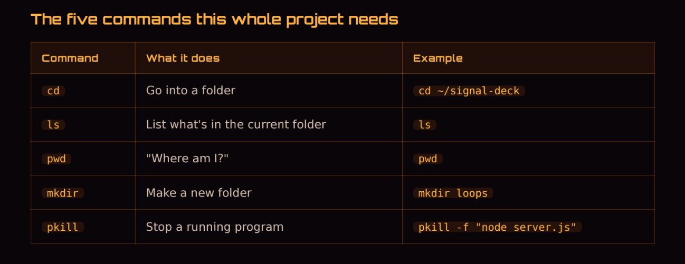
Five commands
cd move foldersls list filespwd show locationmkdir make a folderpkill stop a process
Three rescues
~ is home. A running app occupies its tab. Stop it with Ctrl + C.
Install Node and npm
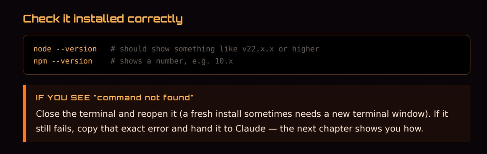
Download the LTS installer from nodejs.org, reopen Terminal, then verify:
node --version npm --version
Node runs JavaScript outside the browser; npm installs the tools.
Make AI your build partner
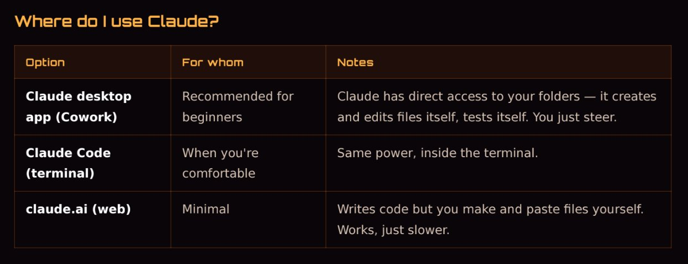
You direct. The model writes. You test. Full errors come back. Repairs happen one step at a time.
I want a Ledger-gated Telegram onchain agent: text or voice → LLM gateway → MoonPay tools plus a raffle adapter → physical Ledger confirmation → Base. Raffle list/get are read-only; enter/create/fund/claim require Ledger. I am a beginner. Explain every command and wait for each test.
Create the Telegram bot
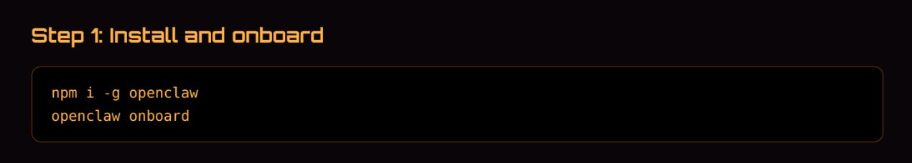
- Find verified @BotFather.
- Send
/newbot. - Choose a name and username ending in
bot. - Store the token in a password manager.
The brain: gateway + model
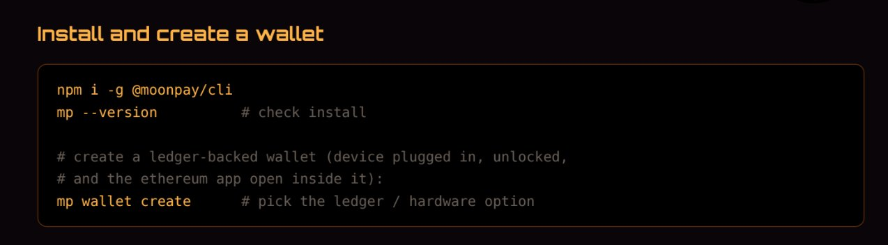
npm i -g openclaw openclaw onboard openclaw gateway
- Pair only your Telegram account.
- Allow enough timeout for hardware confirmation.
- Test chat before adding financial tools.
The payment hands: MoonPay CLI
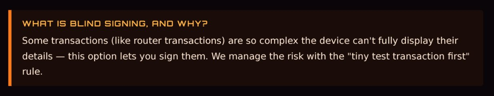
npm i -g @moonpay/cli mp --version mp wallet create mp wallet balance --label nabu-fresh
The veto: Ledger
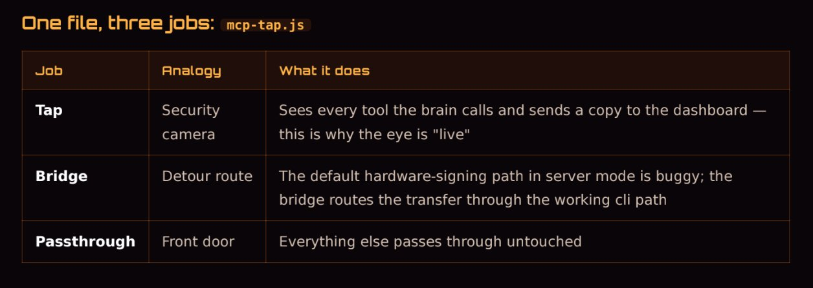
- Verify network, amount and destination on the device.
- Expect multiple confirmations for some calls.
- Reject anything unclear.
- Keep the recovery phrase offline and away from AI.
The hidden layer: Tap + bridge
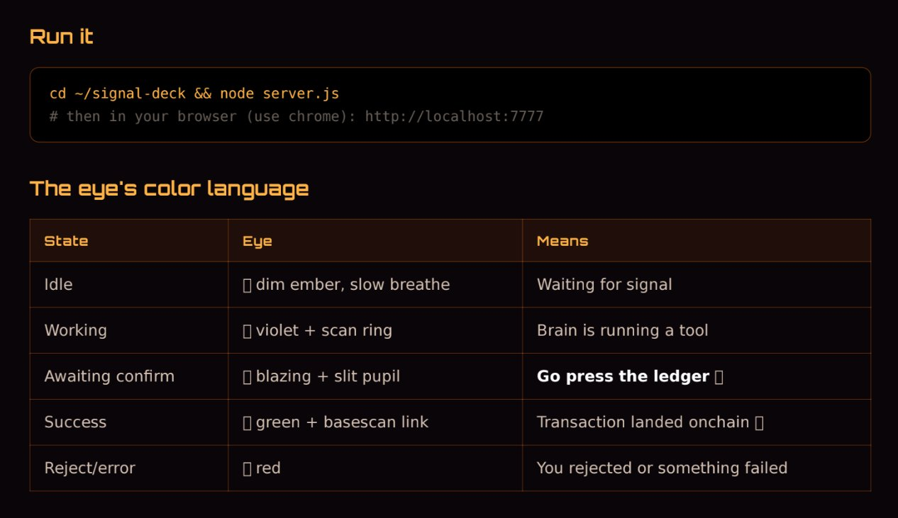
The tap mirrors every tool call to the dashboard. The bridge routes writes through hardware signing. Together they make the agent observable without weakening the veto.
The Eye dashboard
cd ~/signal-deck node server.js # open http://localhost:7777
Your first real transfer
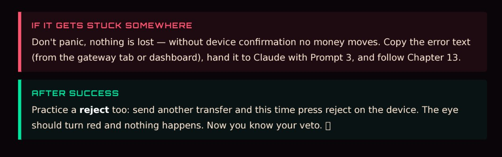
- Ledger connected and Ethereum app open.
- Gateway and dashboard running.
- Dashboard health online.
- Fresh Telegram chat with
/new.
Send send 1 USDC to 0xYourOtherWallet. Watch violet → orange, inspect the device, confirm, then open the BaseScan link from green.
Talk to it
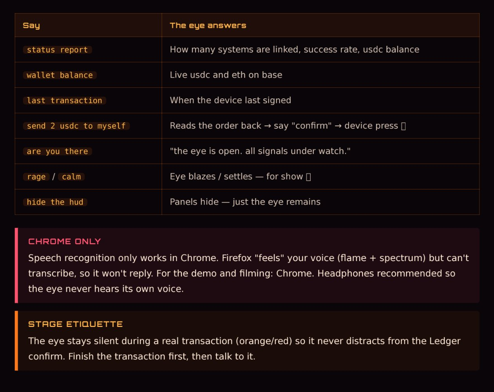
| Say | Expected behavior |
|---|---|
| Show active raffles | Prize, cost and closing time; no signature |
| Enter once | Reads raffle, entry count and max cost; waits |
| Send 2 USDC to myself | Reads transfer back; waits |
Spoken onchain actions
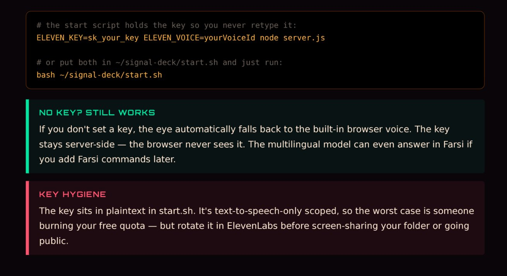
- Transfers use saved contacts and
DECK_VOICE_MAX. - Raffles use fresh IDs and
DECK_RAFFLE_MAX_ENTRIES=1. - One command may be in flight.
- The Ledger still signs the final write.
Raffle mode, without weakening the veto
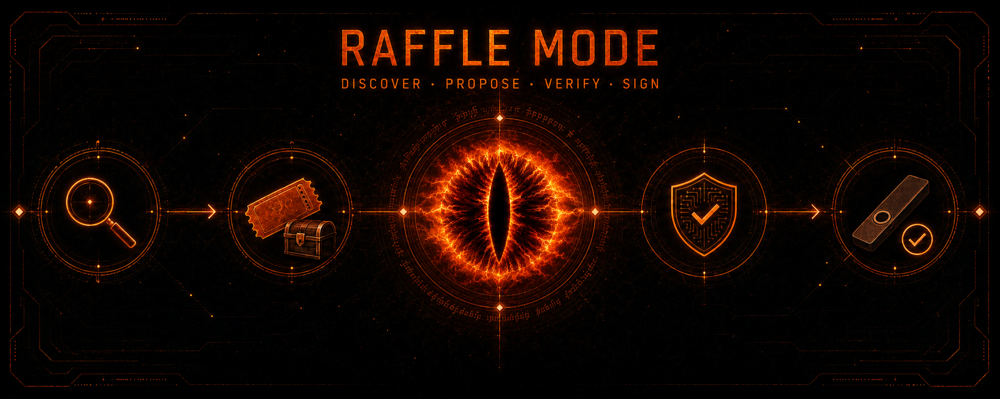
A raffle is not a security exception. Separate read-only discovery from onchain writes.
Read only · no signature
- List active raffles
- Inspect prize, rules and deadline
- Show entries and claim status
Onchain write · Ledger required
- Enter, create or fund
- Claim prize or refund
- Trigger any draw transaction
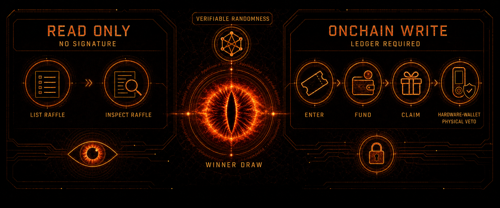
The model never invents a contract or chooses a winner. Use allowlisted contracts and chain IDs; winner selection belongs to verifiable onchain randomness.
Add raffle_list and raffle_get as read-only tools. Add raffle_enter, raffle_create, raffle_fund and raffle_claim as Ledger-gated writes. Accept IDs only from a fresh list result, allowlist contracts and chains, cap entries at one, show maximum total cost, simulate each write, and never let the model select a winner.
Build your cinematic Eye
Create one square fire-eye image, derive violet, green, red and bright-orange states, then animate only fire and embers with a locked camera. Export seamless H.264 loops as idle.mp4, working.mp4, confirm.mp4, done.mp4 and error.mp4.
Troubleshooting
Bot silent
Check gateway and pairing.
Ledger timeout
Foreground gateway; kill stale USB processes.
Raffle refused
Refresh list; verify contract, chain, deadline and cap.
Write waits forever
Reject, inspect simulation, restart bridge.
HANDOFF.md.Security rules worth printing
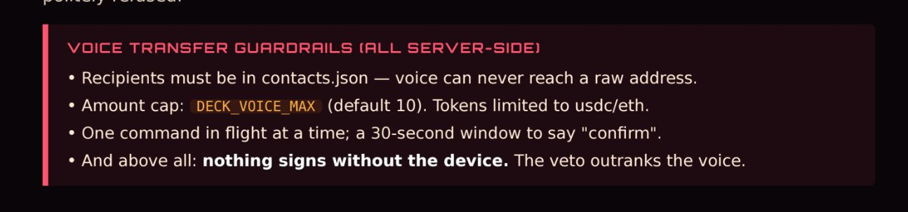
- Recovery phrase stays offline.
- Verify all writes on the Ledger screen.
- Begin with tiny balances.
- Keep tokens and keys private.
- Keep the system local.
- Raffle writes use verified contracts and hard caps.
- AI never chooses a winner; use verifiable randomness.
Build the ecosystem in public
Terminal, Node and AI build loop.
Telegram, gateway and chat.
Wallet, Ledger, tap and fake events.
Tiny transfer, voice, then raffle mode.
This is an onchain-agent architecture: a swappable brain, addable hands and a veto that stays yours.